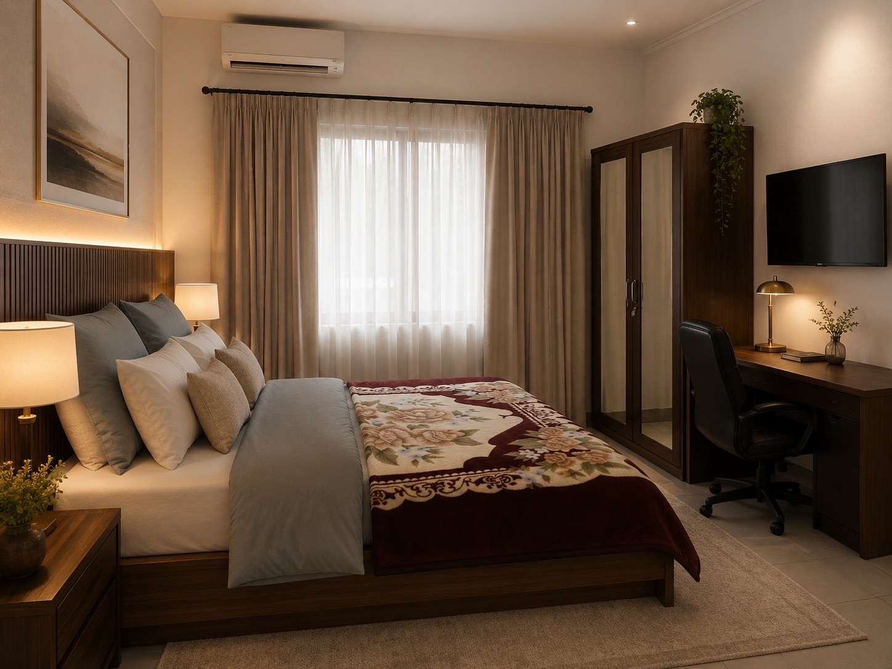
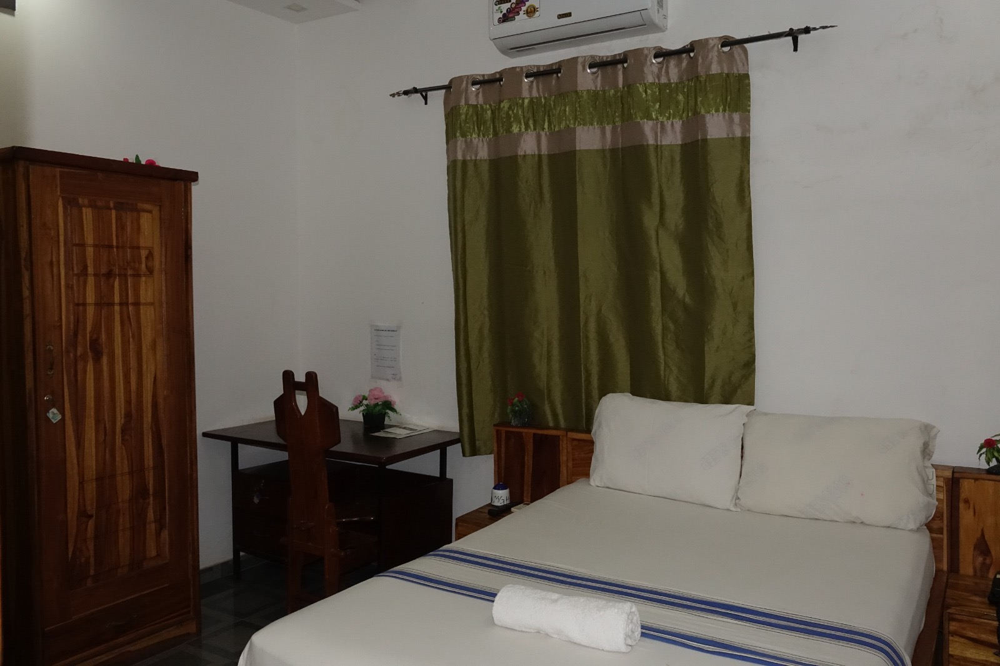
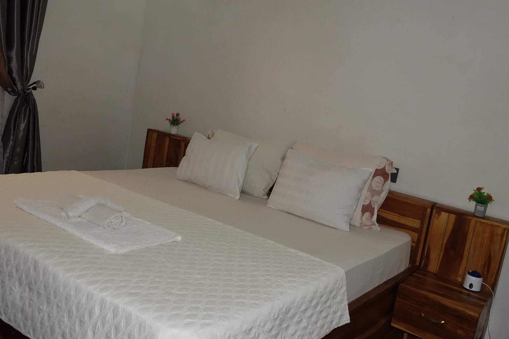
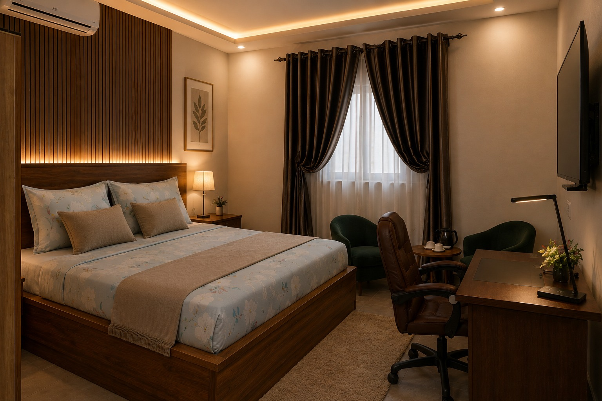
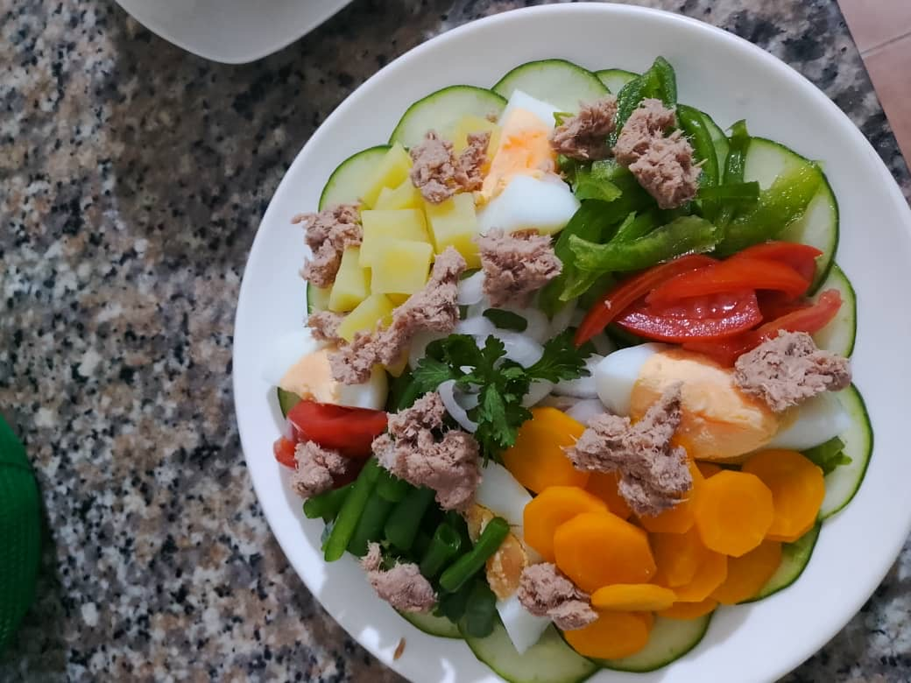

L’UNIVERS DE MARY’S GUEST HOUSE
Découvrez notre établissement en images
Des chambres accueillantes aux plaisirs de notre restaurant, explorez les espaces et les saveurs qui font l’expérience Mary’s Guest House.
Un lieu à découvrir sous tous ses angles
Chaque image vous invite à découvrir un peu plus Mary’s Guest House. Parcourez nos chambres, découvrez notre restaurant et laissez-vous inspirer par les plats proposés dans notre établissement.
NOS ESPACES DE REPOS
Découvrez nos chambres
Explorez nos différents espaces de séjour à travers une sélection de photographies mettant en valeur les chambres et leurs aménagements.

Chambre accueillante

Chambre avec lit rayé

Chambre avec lit rayé

Chambre avec chaise

Chambre avec fauteuil

Chambre avec fauteuil

Chambre avec espace bureau

Chambre avec espace bureau

Chambre

Chambre avec télévision
NOTRE CADRE
L’univers de notre restaurant
Découvrez l’univers de notre restaurant à travers les images disponibles et plongez dans une ambiance propice aux moments de convivialité.
Aucune photo authentique de la façade ou de l’intérieur de la salle du restaurant n’est disponible parmi les images fournies. Le fichier nommé « facade-guest-house-01.jpg » montre une chambre et n’est donc pas présenté ici.
UNE INVITATION GOURMANDE
Découvrez nos plats en images
Salades fraîches, accompagnements et plats savoureux : parcourez notre galerie culinaire et découvrez les différentes préparations présentées par notre restaurant.

Plat composé

Préparation culinaire

Préparation de légumes

Salade composée

Salade aux œufs

Salade composée
Votre prochaine visite commence ici
Vous souhaitez en savoir plus sur nos chambres ou découvrir notre restaurant ? Parcourez nos pages et contactez Mary’s Guest House pour préparer votre visite.